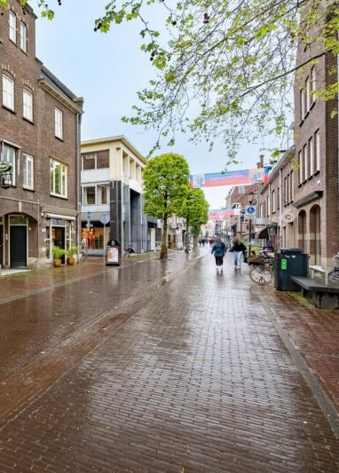

Lokale SEO voor bedrijven in Wageningen
Lokale SEO (Search Engine Optimization) is essentieel voor bedrijven die klanten in Wageningen en omgeving willen aantrekken. Wij zorgen ervoor dat je website geoptimaliseerd is voor lokale zoekopdrachten, zodat potentiële klanten je gemakkelijk kunnen vinden.
Onze lokale SEO-diensten omvatten:
- Optimalisatie voor lokale zoekwoorden zoals "webdesign Wageningen" of "[jouw branche] Wageningen"
- Google Mijn Bedrijf optimalisatie voor betere zichtbaarheid in Google Maps
- Lokale backlink-strategie om je autoriteit in de regio te vergroten
- Lokale content creatie die relevant is voor je doelgroep in Wageningen
- Optimalisatie voor mobiele apparaten, essentieel voor lokale zoekopdrachten
